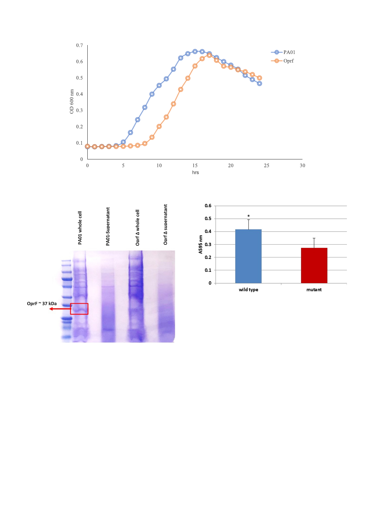

198
S.I. Bukhari, F.S. Aleanizy / Saudi Pharmaceutical Journal 28 (2020) 196–200
Fig. 1. Comparing bacterial growth of P. aeruginosa PAO1 and OprF mutant strain on LB Broth. It is demonstrated that generation time of the OprF deficient strain was slower
and the elongated lag time of inoculation, than the P. aeruginosa wild strain, however, decline phase showed similar pattern for both strains.
Fig. 3. Biofilm detection assay of P. aeruginosa shows significant decline in biofilm
formation from P. aeruginosa PAO1 wild type strain and the OprF mutant strain. The
error bars represent the mean ± standard error. (n = 6, *P < 0.01).
Fig. 2. SDS PAGE Coomassie blue stained comparing P. aeruginosa PAO1 and OprF
mutant strain for OprF detection. OprF porin protein size 37 kDa shown in P.
aeruginosa wild strain whole cell content and missing in the OprF mutant strain.
distribution of P. aeruginosa wild type cells in the niche and
attached to biofilm, whereas, in OprF mutant the cells were
detached in an irregular niche. These images supported the results
of biofilm impairment by the absence of OprF.
3.4. Pyocyanin production
Major virulence factor of P. aeruginosa is the quorum-sensing-
dependent virulence factors pyocyanin production. As it was
noticed the effect of OprF on culture growth rate and biofilm for-
mation, it was still not yet established if inactivation of the OprF
have a direct effect on other virulence factors production. Bacterial
culture strains were also checked for the effect of OprF on major
virulence factors; exclusively studied the pyocyanin production
as a marker of virulence. Measurement of pyocyanin production
by P. aeruginosa wild type strain and OprF mutant strain were gath-
ered and compared showing a significant decline (with
p = 0.00069) in pyocyanin production among the mutated strains
in comparison to wild strain. This clearly magnifies the direct role
of OprF gene on the production of pyocyanin as virulence factor.
4. Discussion
OprF is a cornerstone gene in the expression of biological func-
tions of Pseudomonas aeuginosa (Stover et al., 2000; Fito-
Boncompte et al., 2011). In this study we demonstrate the associ-
ation of OprF and its role in obtaining full virulence in P. aeruginosa
using a multiphenotypic approach, based on the comparative study
of a wild-type strain of P. aeruginosa, its isogenic oprF mutant.
Growth rates, biofilm formation and pyocyanin production of dif-
ferent P. aeruginosa strains are followed up and obtained, their
affection by presence or absence of OprF was investigated.
The growth of P. aeruginosa PAO1 wild strain and P. aeruginosa
PAO1 mutant strain with deficient OprF monitored in a culture
for 24 h were both strains verified similar viability for the culturing
condition but demonstrated slower growth rate in OprF mutant
strain (Fig. 1). This derives in agreement with previous study
studying the link of OM proteins in virulence of P. aeruginosa, they